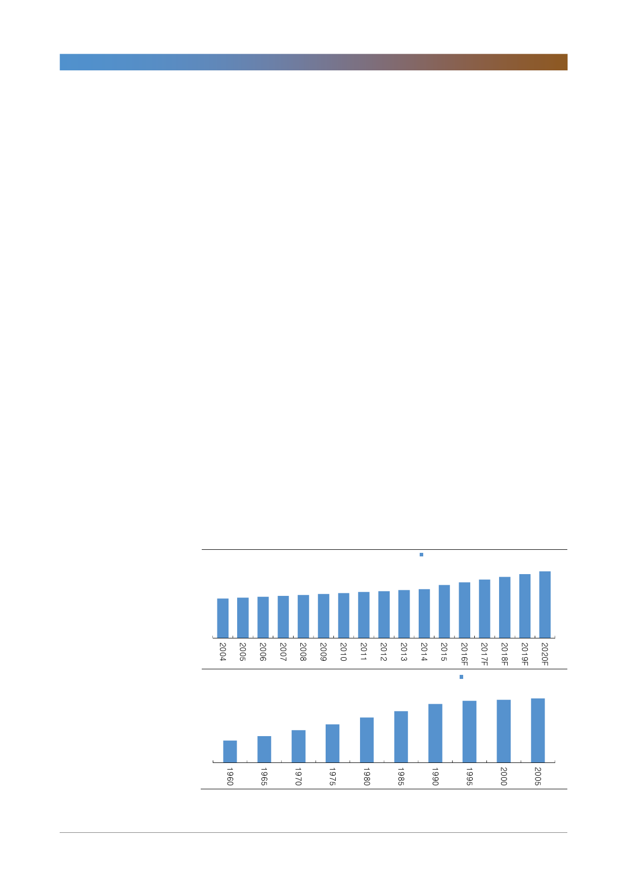

GS건설(006360)
1989년 분당 vs 2018년 호치민 신도시
우리는 지금의 베트남이 분당을 비롯, 1기 신도시를 짓던 한국의 1989년과 유사
하다고 판단한다. 1989년 한국토지공사는 1기 신도시 건설을 시작해 1991년 분
당을 시작으로 입주가 시작됐다. 분당은 594만평 부지에 9.8만세대를 수용할 계
획이었고 지금은 19만세대에 50만명의 거주 도시로 성장했다. 1기 신도시 건설
의 배경은 심각한 주택 부족이었다. 택지부족과 주택 건설의 채산성 악화로 주택
수요는 팽창하는 반면 공급은 부진해 주택가격이 급등했다. 1988년 9월부터
1989년 초까지 강남 아파트 가격이 50% 오르는 기현상이 나타났다.
정부의 대응책은 1기 신도시였다. 1989년 분당 거주민 1.2만명 중 2/3는 농업/
공장 근로자였고 계획면적의 70%가 논과 밭이었다. 분당은 강남과 인접한데다
경부고속도로에서 가까워 서울 외곽의 대규모 개발 가능지 중 1시간 내 출퇴근이
가능한 20~25km 지역이었다. 1989년 1기 신도시 건설이 시작돼 1996년까지
7년간 분당, 일산, 평촌, 산본, 중동 등 1,500만평 부지에 117만명을 수용할 5개
신도시가 지어졌다. 분당과 일산은 자족적 도시 형성이 가능하게 계획됐는데 베
트남 호치민시의 ‘냐베’가 이와 유사하게 성장할 것이다.
베트남의 도시화 속도가 빠르다. 지난 10년간 도시 인구는 연평균 3.5% 증가했
고 2003~2013년 900만명이 도시로 이주했다. 베트남 정부는 ‘2020년 도시개
발계획’ 발표를 통해 현재 35.7%인 도시화 비율을 2020년 45%로 높일 계획이
다. 2015년 도시면적 3,400㎢에서 2020년 4,600㎢로 35% 확대함으로써
2020년 도시 인구는 2015년 대비 32% 증가한 4,400만명에 도달, 베트남 인구
의 45%를 차지할 전망이다. 세대원수를 4명으로 가정하면 2020년까지 266만채
의 아파트와 빌라 등 도시 주택이 필요하며 사업규모는 532조원으로 환산된다.
[그림 10] 베트남과 한국의 도시화율(도시 거주자율)
2020년까지 266만가구의 도시 주택 필요!
27% 27% 28% 29% 29% 30% 30% 31%
32%
32%
베트남 도시 거주자
33% 36% 38% 39%
비율
41%
43%
45%
1기 신도시 입주 시작된 1990년대 가장 급속한 성장
28.0%
33.5%
41.2%
48.4%
57.3%
65.4%
74.4%
한국 도시 거주자 비율
78.5% 79.7% 81.5%
자료: 통계청, GSO, 한국투자증권
8